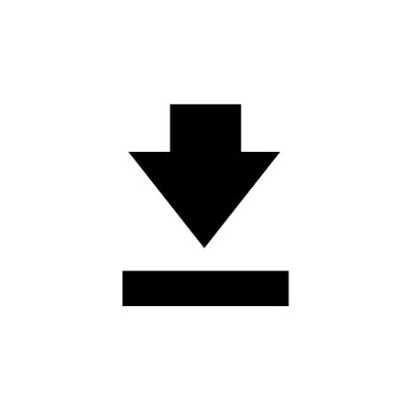

Semana Front-end | Dia 01: Construindo uma Landing Page no Mundo Invertido com HTML e CSS
DIO
83,5 mil inscritos
2 mil
Não gostei
Compartilhar

Baixar
28.418 visualizações Transmitido ao vivo em 23 ago. de 2022
Inicie uma aventura imersiva no mundo do Front-end com HTML e CSS. Para isso, criaremos uma landing page com a temática da série Stranger Things, a qual contará com a implementação de um theme switcher (light e dark) para explorarmos os mistérios do mundo invertido.